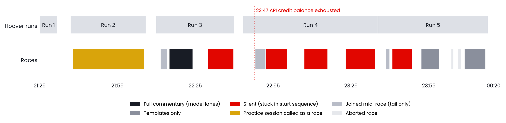
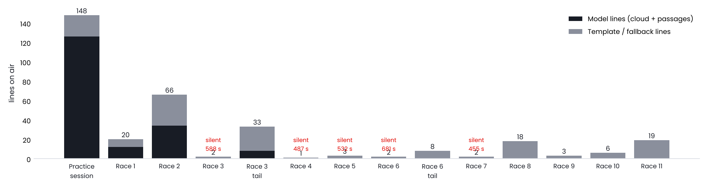
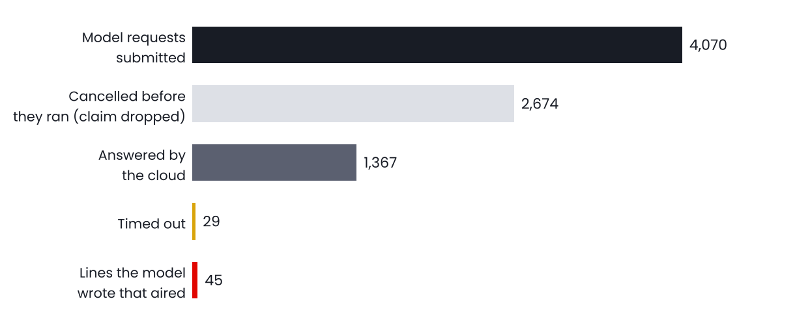
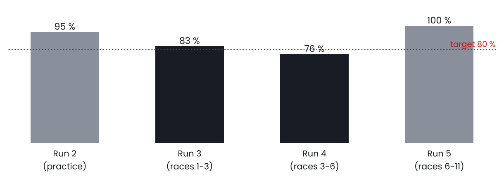

976f330 (merged to your branch as bfec553) — except the credit, which is a top-up.
Hoover was restarted four times (Runs 2–5) as it went quiet. Each silent block is a race where the lights came on, the booth said "Lights coming on", and then nothing until the chequered flag. The practice session (amber) was fluent and confident — and wrong about what it was watching.
| Race | Time | Min | Lines | Model | Template | Longest silence | What the viewer got |
|---|---|---|---|---|---|---|---|
| Practice / qualifying | 21:37–22:05 | 27.5 | 148 | 126 | 22 | 5 min | Race commentary on a practice session: "final lap", "first win locked down", sixty-second gaps |
| Race 1 | 22:11–22:14 | 2.7 | 20 | 12 | 8 | 21 s | Joined on its last lap; results read |
| Race 2 | 22:14–22:24 | 9.1 | 66 | 34 | 32 | 46 s | The full product. Lights, start, lead battle, pit calls, check-ins, finish, corrections |
| Race 3 | 22:29–22:39 | 9.9 | 2 | 0 | 2 | 9.8 min | "Lights coming on" — then silence. Run stopped by hand at 22:39 |
| Race 3 tail | 22:48–22:52 | 4.1 | 33 | 8 | 25 | 15 s | Rejoined mid-race; credit ran out during it |
| Race 4 | 22:52–23:00 | 8.1 | 1 | 0 | 1 | 8.1 min | Silent (and no credit) |
| Race 5 | 23:06–23:16 | 9.1 | 3 | 0 | 3 | 8.9 min | Silent |
| Race 6 | 23:22–23:34 | 11.5 | 2 | 0 | 2 | 11.4 min | Silent |
| Race 7 | 23:40–23:48 | 7.7 | 2 | 0 | 2 | 7.6 min | Silent |
| Race 8 (5 cars) | 23:52–23:59 | 7.0 | 18 | 0 | 18 | 48 s | V3 templates only: lobby too small to "open" |
| Races 9–10 | 00:03–00:07 | 2.2 | 9 | 0 | 9 | 48 s | Aborted starts |
| Race 11 (5 cars) | 00:08–00:16 | 8.2 | 19 | 0 | 19 | 33 s | V3 templates only |

Dark is the model, grey the template. The practice session was the model's best material of the night — on the wrong premise. The silent races show their longest gap in red.
Ranked by how much of the night they cost. Each one is read from the state log and the claims file; the fix column says what is already in the build you will pull.
What you heard. "Lights coming on" … and nothing more until the result, for Races 3, 4, 5, 6 and 7 — about 46 minutes of racing in total.
What the files show. The game sends the start-lights event (STLG) again 0.1–15 s after lights out (LGOT). Every race tonight: 22:52:21.40 LGOT → 22:52:21.49 STLG; 23:07:01 → 23:07:16; 23:23:03 → :05; 23:40:59 → 23:41:00. The race model treats a start-lights event in green as the start sequence beginning again, and in the start sequence the booth may say only the lights line. Nothing brings it back out until the session ends. In Race 4 the lights-out call itself was dropped because the state flipped 90 ms after it was raised. In Race 2 the same thing happened at 22:15:05 but a second lights-out event at 22:15:10 rescued it — and produced two false "Racing resumes / Green flag, and we go again" lines.
Fix. A start-lights event inside 30 s of lights out is the same start and is ignored; a repeated lights-out event inside 30 s is not a restart. Proven on the 12:43 replay (lights line, lights-out call, no false restart).
What you heard. "Final lap." six seconds after the start of every race; "on the final lap" in a third of Race 2's lines; the practice session called as a race for 21 minutes ("Faze's got his first win locked down", "Ronin's sixty point five back").
What the files show. Through the lights and lights out the Session packet still carries the previous session: type 9 (one-shot qualifying), total laps 1. It flips to race, five laps, only after the cars are moving. The model saw leader on lap 1 of 1 and latched final lap, which also switched on the last-two-laps camera lock from lap one. In practice it stayed that way for 1,289 s.
Fix. A final lap needs a race of at least two laps; if the lap count grows after the latch the race goes back to green. Outside a race session (practice, qualifying, time trial) the booth is quiet, and a start-lights event declares the race so the stale packet cannot gag the start.
What the files show. api status 400: Your credit balance is too low to access the Anthropic API from 22:48:04 on. Run 4 then submitted 2,421 requests, cancelled 1,736 and got 8 lines; Run 5 routed nothing to the cloud. Every model line after 22:47 was a template.
Fix. Top up the account and set a balance alert (ops). In the tool, the first "credit balance" or 401/403 answer now latches the cloud lane off with one loud log line and the booth stays on templates without burning 1,700 cancelled calls. The Dashboard's pre-flight Writer check makes a real call, so this shows before a race, not during one.
What the files show. Races 8–11 were a private lobby of five humans and no AI. The session guard waits for ten cars before the story layer is allowed to run; it never saw ten, so Run 5 produced 56 V3 template lines, no stories, no check-ins, no camera stories. Fix. The guard now opens at three cars.
Race 2 (22:14–22:24, seven of our drivers in a 20-car lobby, Abu Dhabi, five laps) is the only complete look at the product tonight. It is worth reading closely, because it is what every race would have sounded like without faults F1 and F3.
Faze crossed the line first carrying a penalty; the booth called the road winner, then corrected itself when the classification arrived. That is the right behaviour, but the winner call should be held when a penalty is pending (§9).

Run 3 (22:09–22:39): every claim that enters the queue is sent to the model, whether or not it will ever air.
The booth raised 4,070 model requests in 28 minutes to air 99 lines. Two thirds were cancelled before they ran because the claim behind them was dropped (expired, story closed, repeat). Of the lines that did air, 49 fell back to a template: 29 timeouts and 18 number-word rejections, where the model wrote a number the state had not licensed. That ratio — forty submissions per aired line — is also what drained the account.
Recommendation (§9): submit a request only when the claim is in the top few of the queue by priority, or is a must-call. Expect the same model share from a tenth of the calls, and the cloud lane to breathe.
The ElevenLabs side held: 360 lines written, 358 spoken, 4 synth failures on network resets at 21:50–21:55 (the internet dropped twice; the model saw getaddrinfo failed at the same moments).

Share of camera time on one of our drivers, per run. Run 5 is 100 % because a five-human lobby has nobody else to show.
Run 3 (the real races) kept the camera on our drivers 83 % of the time with a longest run away of 24 s. In Run 4, with the booth silent and the credit gone, it still held 76 %. The booth's dwell focus took the camera to a human 27 times in Race 2 and never to an AI car; the pit-stop moment followed Ronin and Raider into the box. The lock in the last two laps engaged — but from lap one, because of F2, which is why the camera sat on one driver for long stretches in the middle of races. With F2 fixed that lock returns to the last two laps only.
Every human had a live thread all night ("Valor is holding the lead with Faze a second behind", "Ronin is recovering from contact with Fried, eighth now, down from second on the grid"). Check-ins aired nine times in Race 2 and told the thread rather than a status line. In the practice session the mention debt fired 134 check-in claims — the thread machinery worked, the session did not deserve it.
| Who | Do | Why |
|---|---|---|
| Dustin | Top up the Anthropic API account and set a low-balance e-mail alert. Budget by the funnel: last night's 28-minute race window spent roughly 1,400 answered calls. | F3. Everything after 22:47 was templates. |
| Dustin / Mike | Dashboard → Get latest → version block must show claude/interview-ingest @ bfec553 or later. | Carries F1, F2, F4, F5 and the billing latch. |
| Dustin / Mike | Pre-flight must show Cloud lane green. It makes a real model call now; a red row means no credit or no key. Do not start a race on red. | Catches F3 before the lobby forms. |
| Dustin | Start Hoover once the lobby is a race lobby. Practice and qualifying will now be quiet; that is deliberate, not a fault. | F2. |
| Mike | If the booth goes quiet for more than a minute in green, the state line on the Dashboard now shows session kind, type and laps next to the state. Screenshot it. Do not restart unless it stays quiet past the lights of the next race. | Diagnosis without stopping the run. |
| # | Item | What and why | Size |
|---|---|---|---|
| 1 | Cost control on submissions | Submit a model request only for the top three queue entries by priority and for must-calls; cancel on drop stays. Forty submissions per aired line is both the credit burn and the timeout pressure. Target: under five. | Small |
| 2 | Predictions said and paid | Two nights, 14 predictions planted, 13 confirmed, zero spoken. The projection is right; the line that carries it is not being written. Make the prediction its own beat ("X catches Y by lap five, that's the call") with a must-call payoff, rather than hoping a battle line mentions it. | Small |
| 3 | Winner held while a penalty is pending | Faze was called the winner and corrected to second. The classification logic already knows a penalty is pending for the leader; hold the winner call for it, say "first across the line, with a penalty to come". | Small |
| 4 | Prompt tics | "Oh, yes!" as an opener, "absolutely", "fresh softs" every other line, "the story now". Add to the banned list and vary the opener instruction. | Config |
| 5 | Practice and qualifying programme | Now quiet by design. When wanted: a different, lighter programme — who is quickest, who just went purple, who is still to set a time — not the race programme. | Medium |
| 6 | Podium line and tyre row | Carried over from cycle 4: a "podium as it stands" line at two laps to go, and a stint-age story row now that compound and age are on the wire with public telemetry. | Medium |
| 7 | Capture-driven proof | Stage last night's Race 2 capture (HOOVER_20261009_220958_s01.bin, 346 MB) and replay it with the fixes before the next night, so F1 and F2 are proven on the league's own events, not only on the 12:43 practice capture. | Ops |
| Run folder | Start | Stop | Lines | Model | T/O | Calls | Canc. | Cam. | Note |
|---|---|---|---|---|---|---|---|---|---|
…212500_s01 | 21:25 | 21:25 | 0 | 0 | — | — | — | — | Empty start |
…212525_s01 | 21:25 | 21:31 | 12 | 9 | 0 | 70 | 21 | 78 % | Lobby / end of a practice |
…213656_s01 | 21:36 | 22:05 | 150 | 127 | 2 | 292 | 1 | 95 % | Practice session, called as a race |
…220958_s01 | 22:09 | 22:39 | 99 | 47 | 29 | 4,070 | 2,674 | 83 % | Races 1–3; Race 2 is the reference |
…224334_s01 | 22:43 | 23:35 | 43 | 8 | 18 | 2,421 | 1,736 | 76 % | Races 3–6; credit gone at 22:47 |
…233534_s01 | 23:35 | 00:17 | 56 | 0 | 0 | 0 | 0 | 100 % | Races 6–11; five-car lobby, story layer never opened |
T/O = model timeouts, Calls = cloud requests submitted, Canc. = cancelled before they ran, Cam. = camera time on our drivers. Folder names are HOOVER_20261009_HHMMSS_s01, all in C:\Users\dustin\Repository001\hoover_v3_out on the Oklahoma PC. Lines, claims, blobs, cuts, state and the manifest were read for every run; captures (.bin) were not replayed — they are 160 MB to 916 MB each.
| Commit | Branch | What |
|---|---|---|
a944931 | interview-ingest | The build that ran all night: cycle 4 league build plus interviews and lore on air. |
976f330 | v4-state-blob | V8.7 league-night fixes: start-lights guard, final-lap guard, session gate, small lobbies, grid 255, gap words, lead flap, final-lap check-ins, state-call priority, billing latch. All suites green; 12:43 and 08 OCT captures replayed clean. |
bfec553 | interview-ingest | The same fixes merged onto your branch. This is the one to pull. |
| Setting (plain name) | File | Was → now |
|---|---|---|
| Start guard: lights event after lights out / repeated lights-out | config v3.start_guard | none → 30 s / 30 s |
| Session gate: quiet outside a race | config v3.session_gate.quiet_kinds | none → practice, qualifying, time trial |
| Session guard: cars needed to open | config v3.session_guard.min_cars | 10 → 3 |
| Near-repeat threshold | config v3.repetition.near_repeat_jaccard | 0.6 → 0.5 |
| Line-crossing gap filter window | matrix engine.gap_jump_window_s | 5 → 20 s |
| Lead battle: same pair swapping again is not spoken within | matrix LEAD-02.flap_s | none → 25 s |
| Speech characters per run | config v3.speech.character_budget | 25,000 → 150,000 (set before the night; 30.7k used) |
Links to the live tables: github.com/RoninMask/Repository001 → branch claude/interview-ingest → hoover_config_v4.json, hoover_stories_v4.json, hoover_words_v4.json, hoover_prompts_v3.json.